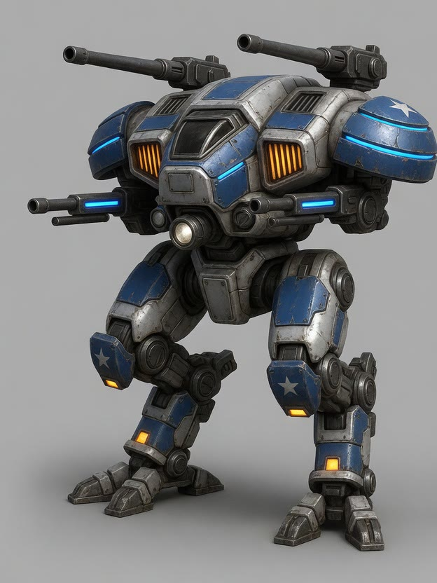
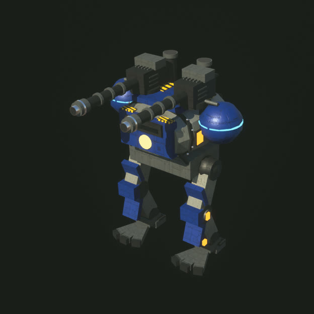

Your buildings
Click a building and press its buttons: train units, research, build. If it's a job the AI can do for you, the button queues it for your team's commander.

A frontier world · Ashfall Reach
A real-time strategy game where the AI runs your army, and you can dive into any unit and fight it yourself.
The pitch
On a frontier world, Prospectors drill Stardust Ore and pump Metallic Hydrogen while armies of up to eight players clash over the deposits.
Your team's AI commander runs the army while you steer it from above. When a fight matters, you take over a unit and play it like a shooter. Overhead hangs Ringshadow, the huge ringed gas giant the game is named for.
How you play
Click a building and press its buttons: train units, research, build. If it's a job the AI can do for you, the button queues it for your team's commander.

Give your AI orders: a stance, objectives (attack, defend, hold, man a Bastion), expansions and requests. It plans the rest.
Click any of your units and dive in. WASD walks, the mouse aims, a click fires, R uses its ability, V switches first and third person, Esc hands it back to the AI.
The roster
Twelve kinds, each with its own cockpit, weapon and ability.
 ProspectorMines ore, pumps MH, builds, repairs
ProspectorMines ore, pumps MH, builds, repairs RangerRifle infantry
RangerRifle infantry CometJump-pack raider, clears cliffs
CometJump-pack raider, clears cliffs JuggernautHeavy grenadier
JuggernautHeavy grenadier FireflyFast flame buggy
FireflyFast flame buggy DropshipHealing transport
DropshipHealing transport LongbowA tank that anchors into artillery
LongbowA tank that anchors into artillery KestrelRocket gunship
KestrelRocket gunship HailstormFlak half-track
HailstormFlak half-track PeregrineAir-superiority fighter
PeregrineAir-superiority fighter AtlasHeavy assault walker
AtlasHeavy assault walkerPilot leveling
The longer you drive a kind of unit in a game, the better every unit of that kind gets, but only while you're the one driving: units the AI runs never level.
Every level offers two upgrades and you keep one: 216 of them across the twelve kinds ("Every Prospector pumps MH 20% faster"). It gives you a reason to drive the units that are dull to play, the Prospector first.

The world
The sun crosses the sky, and at night the beacons and lamps come on. The weather runs on the game clock: sun, broken cloud, rain and storms with lightning, wet ground and hulls.
The music plays as a radio station, KSTR 88.7 Stardust, with original songs and in-world ads between them: Quicksilver Cola (pumped from Metallic Hydrogen wells, "not a beverage"), Opal Glow face scrub (side effects: levitation, being mined) and Citadel Timeshares (ash view guaranteed).

In the works: the MMORPG mode
A persistent online world is being built next to the strategy game: you are one pilot who lives in the ringshadow and drives the machines yourself.
Your Prospector climbs to level 100 over about a hundred hours, with a skill tree of 65 nodes, and keeps every level between sessions.
Pilots raise their cities with ore, MH and hours of labour. Cities are the safe places to log in, trade and meet.
Between the cities lie the deposits, the wells and dwellings, taken and held by force. That's where the fighting happens.
AI characters who are pilots themselves, with a city and a level, keep the world busy where players are few.
You can play it today in a test mode, single player, on a local server that is the same program a public world will run. So far it has our own encrypted server on UDP, a world of regions that the server saves, the ringshadow sweep and starfall, a realm whose Citadel taxes, sells and hands out missions, mercenaries who mine while the game is closed, and the Brood: alien bugs that raid your buildings and eat your ore.
Read how it's being built The roadmapBuilt in public with AI agents
The whole simulation, from the economy and pathing to combat and the AI commanders, is plain C++20 with no Unreal in it. Its tests build with clang and run in about 7 seconds. The Unreal layer draws the frames, plays the sounds and takes the input.
Ringshadow is made with AI coding agents, and the skills they work from are in the repository: concept art to an Unreal model, the buildings' light language, which tests a change needs, and the recorder that makes every clip on this page from the real game.
Each unit starts as concept paintings. The one picked becomes a six-view turnaround, and the in-engine model is built part by part with Geometry Script and fitted against those views.



Public domain
Everything in the repository is dedicated to the public domain under CC0 1.0: the code, the art, the models, the sounds, the music and the docs. Use any of it for anything, with no credit needed.
A few third-party files keep their own licences, listed in the README. The fonts on this site, Barlow Condensed and Exo 2, are under the SIL Open Font License (Barlow, Exo 2). The game is built with Unreal Engine 5, which has its own licence from Epic Games.
The source on GitHub